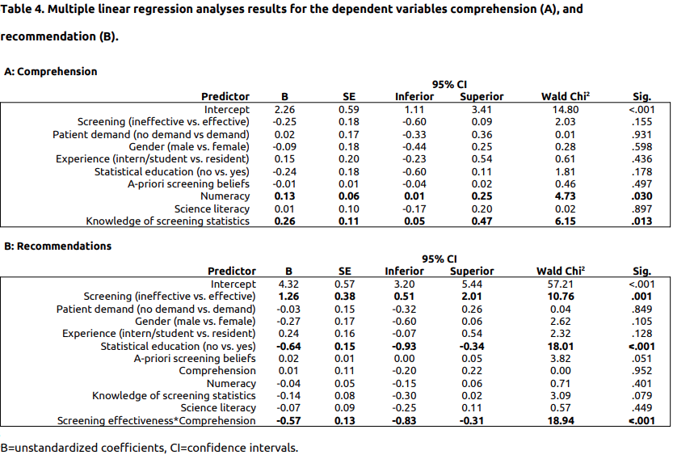
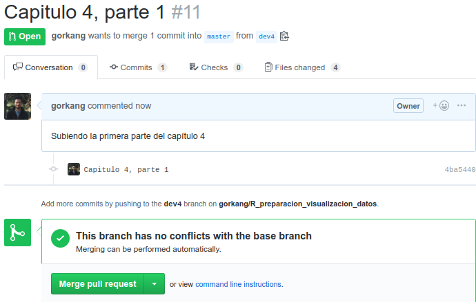

Capítulo 6 Trabajo con RMarkdown para reportes reproducibles
Paquetes para este capítulo
if (!require('afex')) install.packages('afex'); library('afex')
if (!require('correlation')) install.packages("correlation"); library('correlation')
if (!require('corrr')) install.packages('corrr'); library('corrr')
if (!require('dplyr')) install.packages('dplyr'); library('dplyr')
if (!require('DT')) install.packages('DT'); library('DT')
if (!require('ggraph')) install.packages('ggraph'); library('ggraph')
if (!require('here')) install.packages('here'); library('here')
if (!require('gtsummary')) install.packages('gtsummary'); library('gtsummary')
if (!require('knitr')) install.packages('knitr'); library('knitr')
if (!require('papaja')) install.packages("papaja"); library('papaja')
if (!require('parameters')) install.packages('parameters'); library('parameters')
if (!require('remotes')) install.packages('remotes'); library('remotes')
if (!require('renv')) install.packages("renv"); library('renv')
if (!require('report')) install.packages("report"); library('report')
if (!require('rticles')) install.packages('rticles'); library('rticles')
if (!require('see')) install.packages("see"); library('see')
if (!require('sjPlot')) install.packages('sjPlot'); library('sjPlot')
if (!require('stringi')) install.packages('stringi'); library('stringi')
if (!require('tinytex')) install.packages('tinytex'); library('tinytex')
if (!require('usethis')) install.packages('usethis'); library('usethis')
# if (!require('grateful')) remotes::install_github("Pakillo/grateful"); library('grateful')Dependencias
Vamos a necesitar Git y Latex para poder trabajar:
Instalar Git
Ver instrucciones para Windows, Mac y Linux.
Instalar latex:
tinytex::install_tinytex() # Llevará un rato6.1 Que es la reproducibilidad

La crisis de replicación (replication crisis) se inició con un paper que trató de replicar los resultados de 100 investigaciones clásicas. Esta crisis ha generado un movimiento muy interesante dentro de las Ciencias Sociales y la Psicología en particular. Cada vez es más común aplicar algunos principios de buenas prácticas como compartir materiales, datos y scripts de análisis, para que tanto los revisores como otros investigadores puedan entender, reanalizar, etc. nuestras investigaciones.
Hay algunas organizaciones que han surgido para tratar de mejorar la colaboración, transparencia, y manera de trabajar, como el Psychological Science Accelerator, la Peer Reviewer’s Openness Initiative (PRO), o la Open Science Foundation. Una de las soluciones propuestas para resolver muchos de los problemas actuales pasa por los Registered reports. En estos se da una restructured submission timeline: Before collecting data, authors submit a study protocol containing their hypotheses, planned methods, and analysis pipeline, which undergoes peer review. La última evolución de los Registered Reports es la Peer Community in Registered Reports, la cual establece un sistema de revisión de RR global, independiente de las revistas.
Además de los motivos científicos para trabajar de manera más transparente y reproducible, hay también motivos prácticos. Si trabajamos de manera reproducible, las modificaciones en tablas, gráficas, número de participantes o reanálisis son triviales. En este capítulo vamos a ver algunos pasos fundamentales para tender un workflow que permita y ayude a la reproducibilidad.
6.2 Proyectos de R-Studio
El primer paso empieza por crear un proyecto de RStudio. Al usar proyectos, simplificamos varias cosas, haciendo automáticamente más fácil compartir nuestro trabajo con otras personas. Podéis leer algo más sobre esto aquí.
6.3 RMarkdown, openscience y análisis reproducibles
RMarkdown es un tipo de archivo que nos permite combinar texto formateado con código y resultados en un mismo documento (HTML, PDF, WORD…). Probablemente en el futuro se use quarto, una evolución de Rmarkdown que facilita la interoperabilidad entre R y Python, etc.
Aprovechando la potencia de este tipo de archivo, algunas personas han creado paquetes para preparar artículos en formato APA, o con las plantillas de decenas de editoriales.
6.4 Sintaxis, chunks de código, tipos de archivo
La sintáxis básica de RMarkdown es sorprendentemente sencilla, como se puede ver más abajo. Eso si, lo que hay detrás es toda la potencia de latex, así que el cielo es el límite.

Y como no, tenemos mucha ayuda:
Resumiendo, tienes tres elementos básicos:
6.4.1 Cabecera YAML
Cuando creas un documento .Rmd nuevo verás algo similar a lo siguiente en las primeras lineas:
---
title: "Untitled"
author: "G"
date: "6/1/2019"
output: pdf_document
---Esta es la cabecera YAML, en la cual se le pueden pasar parámetros para añadir un índice, cambiar formato, y muchas otras cosas.
6.4.2 Rmarkdown
En el resto del documento (con la excepción de los chunks de código), el formato que usaremos será Rmarkdown. Su sintaxis es muy sencilla pero nada tolerante. Podéis ver las bases en la R Markdown cheatsheet.
IMPORTANTE. Si algo no funciona como esperas:
- Añade saltos de linea entre párrafos.
- Añade dos espacios al final de las líneas.
- Añade un espacio después de #:
- MAL:
#Título grande - BIEN:
# Título grande
- MAL:
6.4.3 Chunks de código
Los chunks de código están delimitados por:

En su interior, puedes usar código R como si estuvieras en un script de R normal.
En la cabecera puedes añadir opciones. Hay una cantidad apabullante de opciones. Por ejemplo, en el siguiente chunk:
{r nombre_chunk, eval=TRUE, include=TRUE, fig.height=10, fig.width=12, message=FALSE, warning=FALSE, cache=TRUE, results='asis'}
eval=TRUE: Muestra el códigoinclude=TRUE: Corre el códigofig.height=10: altura de los plots (en inches)fig.width=12: ancho de los plots (en inches)message=FALSE: NO muestres mensajeswarning=FALSE: NO muestres warningscache=TRUE: cachea el output del plotresults='asis': muestra el output tal cual (importante cuando el output es en latex/pdf)
Haciendo click en la herramienta de la derecha del chunk puedes controlar varios parámetros esenciales.
TRUCO:
- Si tienes un chunk al principio llamado
setup, cada vez que reinicies RStudio y ejecutes código en cualquier parte de tu documento, ese bloque se ejecutara automaticamente. Esto es ideal para poner tus librerias, lectura de datos…
Ejercicio básico RMarkdown
Volvamos al archivo .Rmd que creamos antes. Hagamos lo siguiente:
- Dale formato de artículo científico, creando las siguientes secciones:
- Title
- Abstract
- Introducción
- Materials and Methods
- Participants
- Materials
- Results
- Experiment 1
- Experiment 2
- Discussion
- Bibliography
Pon texto de relleno dentro de cada sección. Para ello puedes usar la función
stringi::stri_rand_lipsum()del paquete {stringi}.Renderiza tu documento en formato PDF.
Pull, Commit, Push, Pull…
Ejercicio avanzado
Usando la base de Cancer Screening Risk Literacy of Physicians in Training: https://osf.io/qn9a2/ y el preprint del artículo:
# Leemos la base y seleccionamos algunas de las columnas clave
DF = haven::read_sav(here::here("data/files/Dafina/Cancer screening risk literacy R1.sav")) %>%
select(IDparticipante, gender, Edad, Sexo, screenbeliefs, numeracy, sciliteracy, statsed, benefits, harms, recommendation)En el documento .Rmd de antes:
- Cread algo parecido a la tabla de correlaciones (Tabla 3) que se ve en el artículo.

- Tratad de emular el tipo de análisis que se ve en la Tabla 4. Podéis hacer una regresión lineal prediciendo
recommendationcon algunas de las variables que usamos en la correlación anterior.

6.5 De los datos al reporte final: Una historia de amor con R
# remotes::install_github("crsh/papaja")
install.packages("papaja")
# Create new R Markdown file
rmarkdown::draft(
here::here("data", "output", "mymanuscript.Rmd"),
"apa6",
package = "papaja",
create_dir = FALSE,
edit = FALSE)
# Render manuscript
rmarkdown::render(
here::here("data", "output", "mymanuscript.Rmd"),
quiet = TRUE,
clean = TRUE)Y no olvidemos el paquete {rticles}, que contiene plantillas de decenas de editoriales
6.6 Avanzado
Para evitar problemas con los paths de los archivos, usar
here::here()Para evitar problemas con instalación de Latex:
tinytex::install_tinytex()- Corregir ortografía en Rmarkdown (F7)
- https://github.com/ropensci/spelling#readme
6.6.2 Citar los paquetes que usamos
¿Debemos citar los paquetes que usamos?
- Respuesta corta, si
- Respuesta larga, la mayoría de los paquetes
# grateful::cite_packages(all.pkg = FALSE,
# out.format = "rmd",
# out.dir = "dev")6.6.3 Manejo de dependencias
Usando un sistema de manejo de dependencias renv creamos un snapshot de las librerías usadas actualmente. Es muy importante para garantizar que nuestros scripts correran en el futuro.
Instalamos renv:
install.packages("renv")Inicializamos el entorno local de un nuevo proyecto, con una librería privada de R
renv::init()Trabajamos en el proyecto, instalando los paquetes que necesitemos
Guardamos el estado de las librerías usadas en el proyecto en un lockfile (llamado renv.lock),
renv::snapshot()Restauramos el estado de las librerías a partir del lockfile generado por renv::snapshot().
renv::restore()
6.7 Varios
6.7.1 Shortcuts!
- Alt+SHIFT+K: Ver shortcuts!
- CTRL+SHIFT+M: Pipe
- CTRL+SHIFT+A: Reformat code
- CTRL+I: Reindent lines
6.7.2 Estilo
Es recomendable ser consistente en la manera de escribir código. Habitualmente se recomienda seguir una guía de estilo. Por ejemplo, Hadley Wickham’s Style guide o la guia de estilo del tidyverse.
6.8 Control de cambios con Git y Github

SOURCE: https://xkcd.com/1597/
6.8.1 Git
Un segundo elemento que nos va a ayudar a trabajar en equipo, y a evitar problemas en proyectos relativamente complejos es el uso de un sistema de control de versiones como Git. Los proyectos de RStudio hacen especialmente sencillo usar algunas funcionalidades básicas de Git.
Algunas referencias útiles:
6.8.2 Github

SOURCE: github.githubassets.com
{kind=link}
Github es una plataforma web muy popular donde almacenar proyectos de programación que usa como motor. Muchos de los paquetes de R, el mismo RStudio, etc, tienen repositorios abiertos en Github. Una de las ventajas fundamentales de usar Github es que esta plataforma integra algunas herramientas para hacer más sencillo el control de versiones, como el pull request, que nos permite combinar ramas de proyectos sin apenas problemas.
Github tiene un programa especial para estudiantes: https://education.github.com/
6.8.3 Clonar un repositorio existente
Algo que podemos hacer con todos los repositorios de Github es clonarlos localmente:
Primero, copiamos la repository URL del repo de Github (ver imagen de abajo). Será algo similar a https://github.com/VUESTRO_NOMBRE_DE_USUARIO/NOMBRE_REPOSITORIO.git

Segundo, en RStudio: File > New Project > Version Control > Git

6.8.4 Crear un proyecto en RStudio asociado a Github
Podemos empezar creando un repositorio en Github, para después clonarlo localmente. Si necesitamos crear un personal access token, podemos consultar la ayuda de Github.
# Puedes usar:
usethis::create_github_token()
# O manualmente, como los animales:
# En tu página de Github, haz click en tu icon (arriba a la derecha) -> Settings -> Developer settings -> Personal access tokens -> [Generate new token] -> Give gist, repo and workflow permissions.Versión simple [recomendado]
En Github:
Creamos repositorio nuevo
Initialize this repository with a README
Alternativamente, si ya tenemos un proyecto de RStudio, podemos crear un repositorio de Github asociado automágicamente.
Usando el terminal
Crear local git repo (solo si no lo tenemos aún):
usethis::use_git()(se crea una carpeta oculta llamada .git)Crear Github Token:
usethis::create_github_token()Insertar token en archivo .Renviron:
usethis::edit_r_environ()Crear Github repo:
usethis::use_github()
- Empujar el repositorio local a Github:
git push --set-upstream origin master
Ejercicio Git-Github
Crea un proyecto de RStudio
Abre una cuenta en Github y/o haz login
Sigue los pasos de arriba para crear un repositorio público y asociarlo a un repositorio local
6.9 Workflow

SOURCE: nvie.com
Hay diferentes filosofias sobre cual es la mejor manera de trabajar con Git.
En este post por Vincent Driessen podeis ver una explicación bien detallada, complementada con imagenes como la que se ve a continuación.
El modelo básico implica la existencia de dos ramas. Una master (“producción”), que siempre debe funcionar, y una develop (para desarrollo), donde experimentamos, rompemos cosas, etc.
Podeis ver un manual super completo llamado Happy Git and GitHub for the useR elaborado por Jenny Bryan, Jim Hester, entre otros.
6.9.1 Modelo básico
En RStudio podemos trabajar gráficamente, Usando el panel Git.

Usando el entorno gráfico
Empezamos en la rama master:
- Pull
 : nos aseguramos que nuestro repositorio local esta actualizado
: nos aseguramos que nuestro repositorio local esta actualizado
- Branch
 : Creamos nueva rama llamada development
: Creamos nueva rama llamada development
- Hacemos cambios en nuestros scripts
- Commit
 : Commiteamos los cambios
: Commiteamos los cambios
- Push : subimos la rama a Github
- Pull request (En Github):
- Compare & Pull request
- Pull : nos aseguramos que nuestro repositorio local esta actualizado
Como hacerlo usando el terminal 
- Pull: nos aseguramos que nuestro repositorio local esta actualizado:
git pull - Branch: Creamos nueva rama llamada development:
git checkout -b development
- Hacemos cambios en nuestros scripts
- Commit: Commiteamos los cambios
- Añadimos archivos:
git add foo.txt
- Hacemos el commit:
git commit --message "A commit message"
- Push: subimos la rama a Github:
git push origin development
- Pull request (En Github):
- Compare & Pull request
- Pull: nos aseguramos que nuestro repositorio local esta actualizado:
git pull
6.9.2 Pull request en 3 + 1 sencillos pasos
Después de hacer el push de arriba, al entrar en nuestro repositorio deberíamos ver algo parecido a lo siguiente (si no lo vemos, ir a branches). La única dificultad es saber cual de los botones verdes apretar:
Paso 1. Compare & pull request

Paso 2. Create pull request

Paso 3. Merge pull request

- Borrar rama antigua
Ejercicio
Nuestro primer commit
Usando el proyecto de RStudio de antes, crea una rama nueva llamada development
Crea un nuevo archivo en formato .Rmd:

Haz un commit de ese archivo y subelo (push) a Github (asegurate que esta allá!). No olvides hacer un pull!
Ahora haz cambios en el archivo, commitealos, súbelos, y sincroniza tu repo local
Bibliografía
Happy Git and GitHub for the useR
Scheel, A. M., Schijen, M., & Lakens, D. (in press). An excess of positive results: Comparing the standard Psychology literature with Registered Reports. Advances in Methods and Practices in Psychological Science.
Xie, Y., Allaire, J. J., & Grolemund, G. (2018). R Markdown: The Definitive Guide. CRC Press. https://bookdown.org/yihui/rmarkdown/
Yihui Xie (2018). bookdown: Authoring Books and Technical Documents with R Markdown https://bookdown.org/yihui/bookdown/markdown-syntax.html
- Mas cosas sobre reproducibilidad: